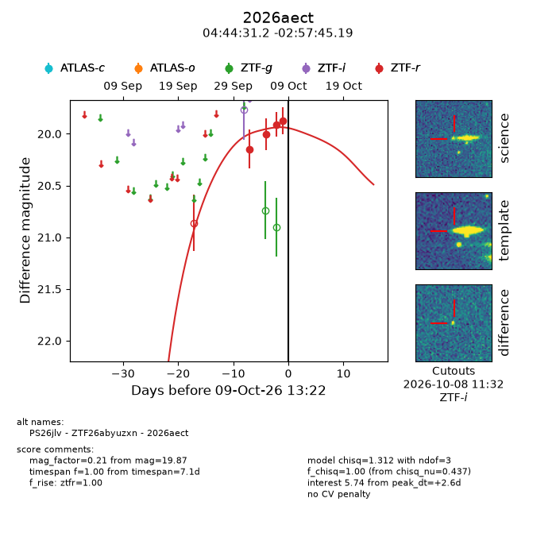
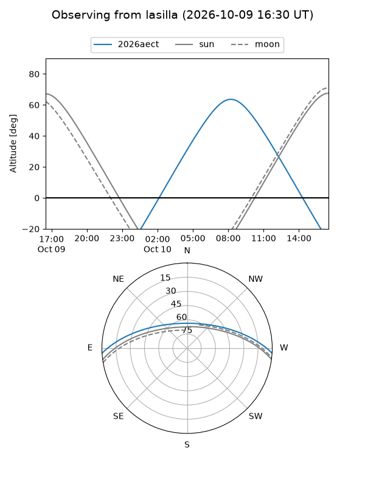
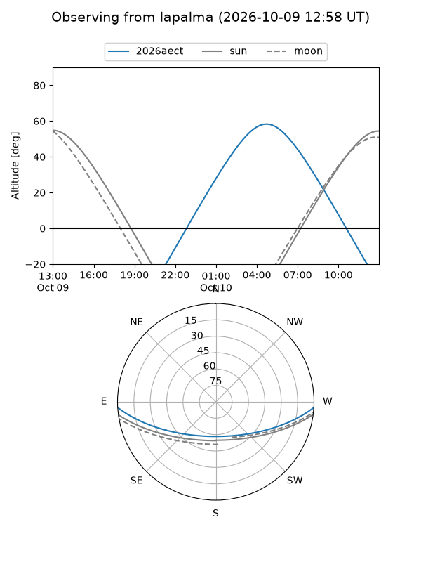
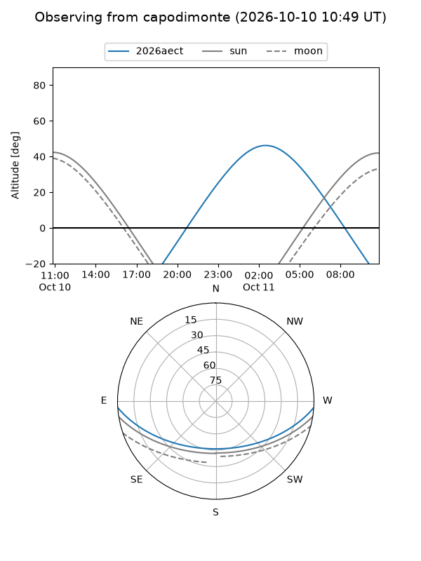
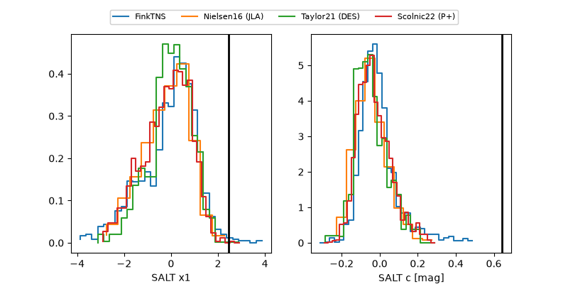

2026aect
Target 2026aect at 2026-10-09 13:25
Aliases and brokers:
FINK-ZTF: ztf.fink-portal.org/ZTF26abyuzxn
Lasair-ZTF: lasair-ztf.lsst.ac.uk/objects/ZTF26abyuzxn
ALeRCE-ZTF: alerce.online/object/ZTF26abyuzxn
YSE-PZ: ziggy.ucolick.org/yse/transient_detail/2026aect
TNS name: wis-tns.org/object/2026aect
Direct TNS query: direct search
alt names
ZTF26abyuzxn (ztf,fink_ztf)
2026aect (tns,yse)
PS26jlv (panstarrs)
Coordinates:
equatorial (ra, dec) = 71.1301,-2.96255
equatorial (HMS+DMS) = 04:44:31.24,-02:57:45.19
galactic (l, b) = (200.0994,-29.40582)
Flags:
peak dt: +2.6
Photometry:
last ztfr=19.87
4 ztfr detections
Lightcurve

Visibility



Additional plots
